审计结论
当前页面的主要问题不是像素微调，而是 Production 没有运行 Mock 所表达的同一个产品：执行顺序、模型路由、AI 收据、进度算法、暂停/停止/恢复、AI 结果进入 Work queue 的因果链，以及各类结果项的动作模型都存在断点。
包括“0 tokens 仍完成”、所选模型未控制调用、进度倒退、停止后索引仍可能继续写、partial 被当成 completed。
Run workbench、Completed 信息顺序、Work queue 调整入口、11 类结果工作区均未完整迁移 Mock 合同。
必须先修 route / receipt / state machine，再替换 subtree 和迁移 CSS。反过来做会继续制造“看起来在跑、实际没调用”的假状态。
视频中最直接的证据是：AI Work 已标为 Completed，但所有 per-file operation 仍是 Not started、AI usage 为 0；随后整体进度从 81% 回退到 76%；最终 502/502 summaries 与 AI tags 都显示 Completed，却仍是 0 tokens / US$0。源码能完整解释这些现象，不是录屏偶发。
Impact Contract 与保护范围
本轮必须关闭
受保护，不应被顺手重做
Overview、Vault map、Contents、Activity、顶部 IA、其他九个真实页面；既有真实数据和分布；用户文件写入的 source-hash / explicit Apply 安全边界。
禁止：复制 Mock 合成数量；伪造 provider receipt；为空数据隐藏整个 UI；为了复用旧 generic modal 而牺牲结果项语义；以 build 或静态源码匹配代替真实 Obsidian 验收。
Protection ledger审计起始 dirty worktree（必须视为他人/用户所有）本任务没有 revert、stage、覆盖或纳入这些产品改动
Pre-existing modified
docs/pre-launch-todo.md
docs/roadmap.html
main.ts
src/app/context/AppContext.ts
src/app/vault-intelligence/VaultIntelligenceRuntime.ts
src/core/profiles/ProfileRegistry.ts
src/core/profiles/materialize.ts
src/core/providers/model-registry.ts
src/core/providers/model-selection.ts
src/core/providers/ollama/fetchOllamaModels.ts
src/core/providers/refreshLocalProfileModelCatalogs.ts
src/core/types/vault-intelligence.ts
src/service/search/embeddings/embedClient.ts
src/service/search/index/indexInitializer.ts
src/service/search/index/indexService.ts
src/styles/peak-components.css
src/ui/view/vault-intelligence/VaultIntelligenceDefaults.ts
src/ui/view/vault-intelligence/VaultIntelligenceModel.ts
src/ui/view/vault-intelligence/VaultIntelligenceWorkspace.tsx
templates/config/models/model-catalog.json
templates/config/vault-intelligence.json
test/embed-client.test.ts
test/model-picker-local-discovery-boundary.test.ts
test/profile-model-catalog.test.ts
test/unified-model-selection.test.ts
test/vault-intelligence-rendered-parity.test.ts
test/vault-intelligence-runtime.test.ts
test/vault-intelligence-standalone-contract.test.tsPre-existing untracked / task-owned separation
# Pre-existing untracked
src/core/providers/openrouter/
src/ui/view/vault-intelligence/VaultScanEstimate.ts
test/ollama-model-discovery.test.ts
test/vault-scan-estimate.test.ts
# This audit owns only
docs/superpowers/audits/
2026-08-23-vault-intelligence-scan-work-queue-result-parity-audit.html
docs/superpowers/audits/assets/
vault-intelligence-scan-work-queue-parity-2026-08-23/Commit rule：Stage B 若启动，必须先重新取 status，并按 hunk 证明 task ownership；禁止 git add -A。如果上述同一文件持续由其他工作修改，无法安全拆分时应停止提交，而不是混合所有权。
逐屏视觉证据
下列图片均为 1728×1084。Mock 截图来自唯一 reference HTML；Production 截图来自用户提供的真实 Obsidian 录屏。Overlay 只用于暴露几何/结构偏差，不用于证明数据或交互正确。
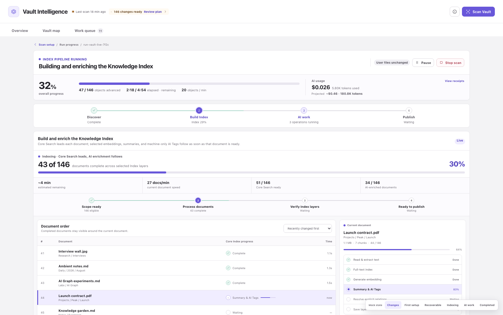
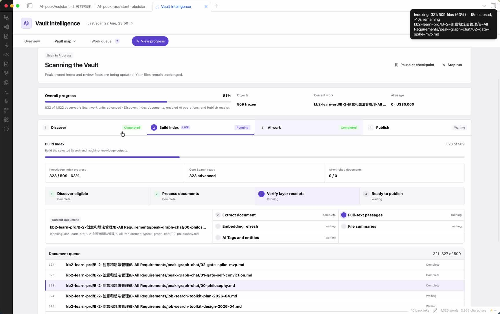
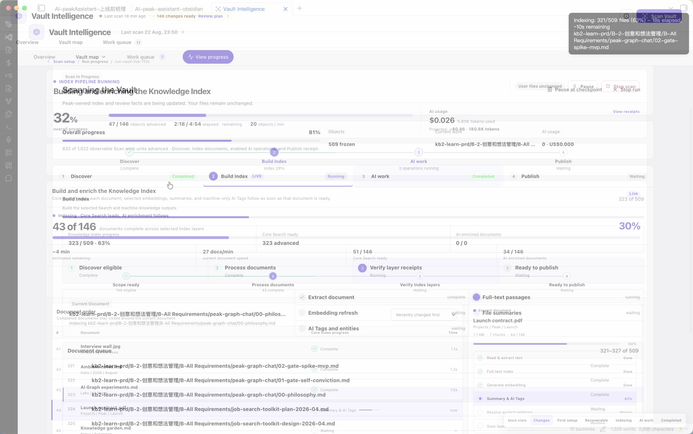
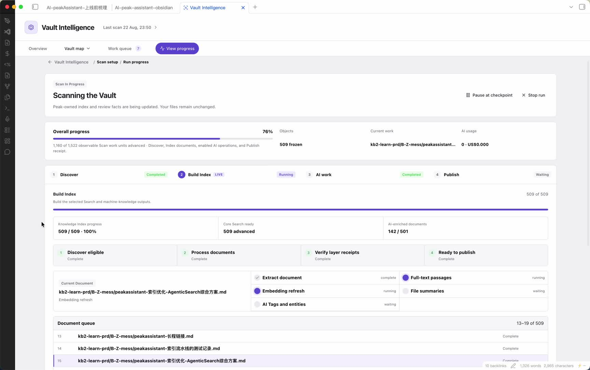
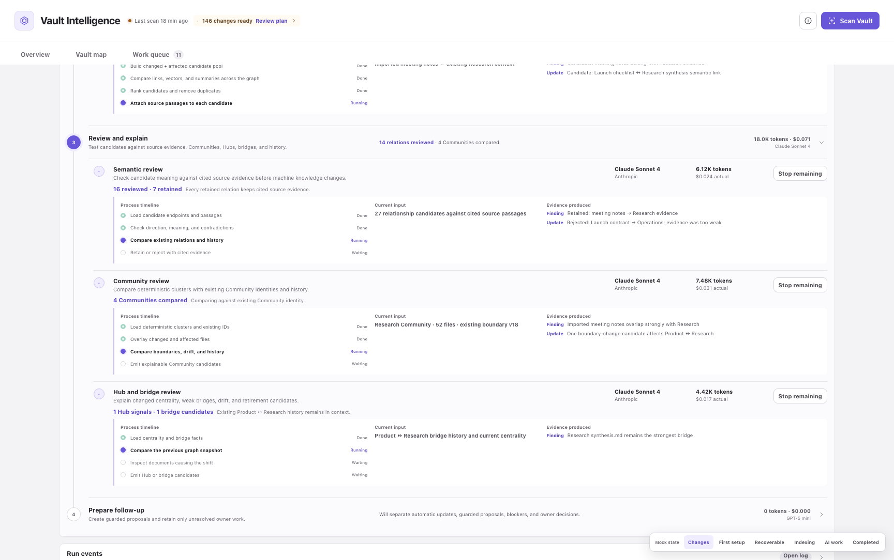
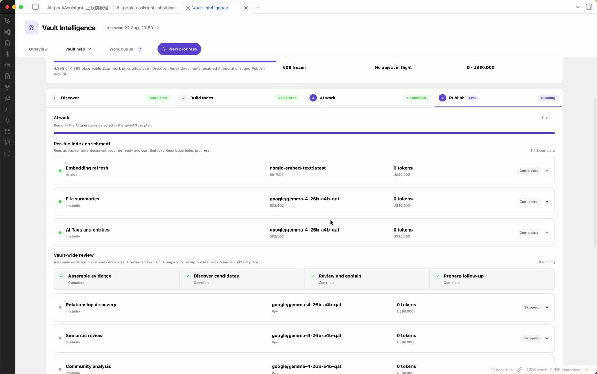
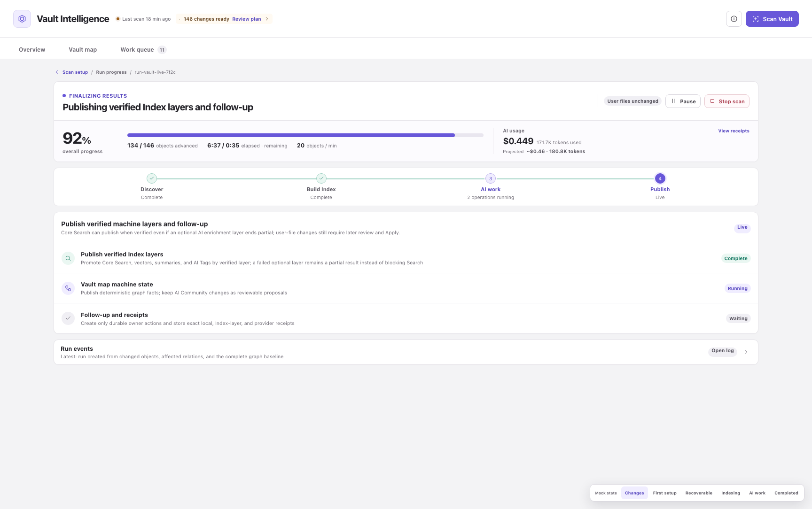
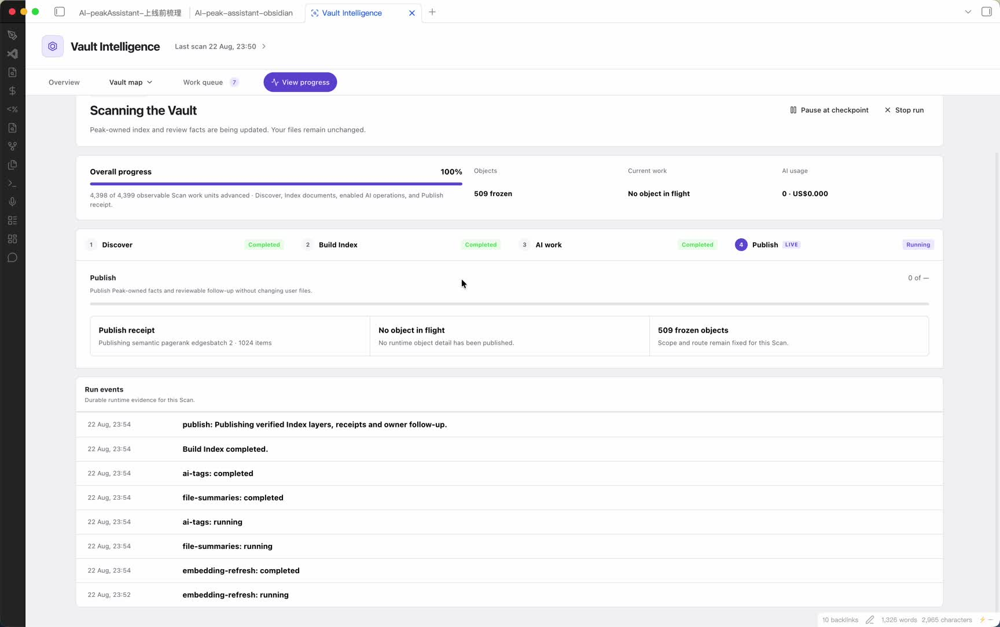
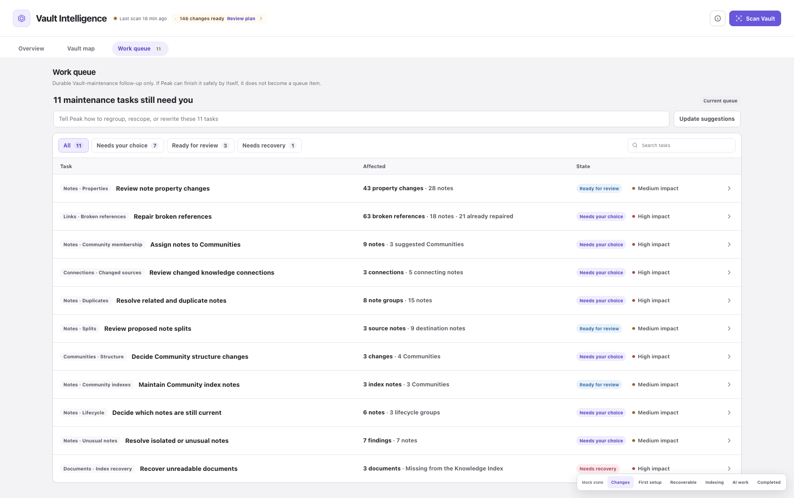
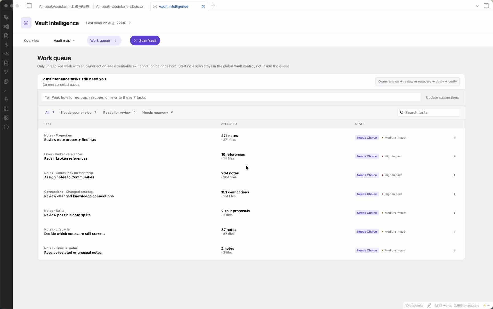
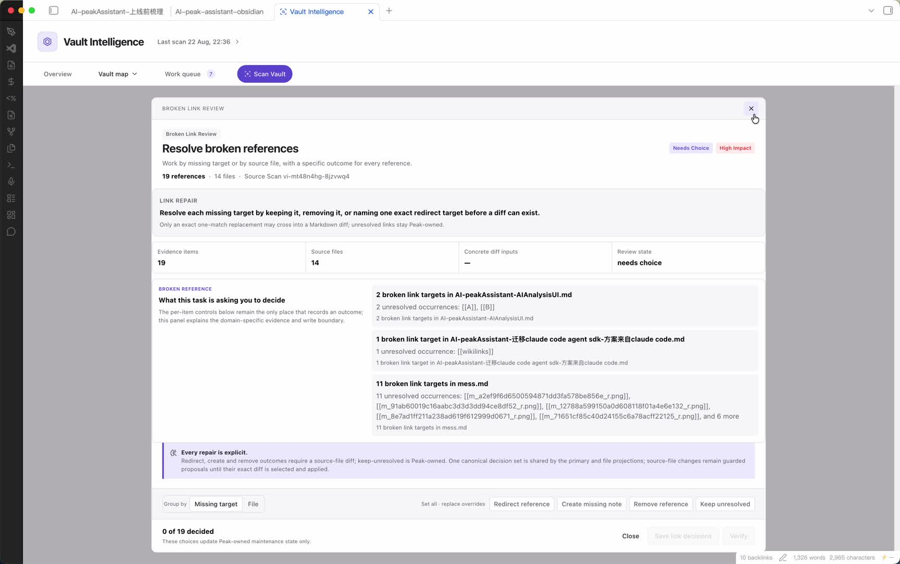
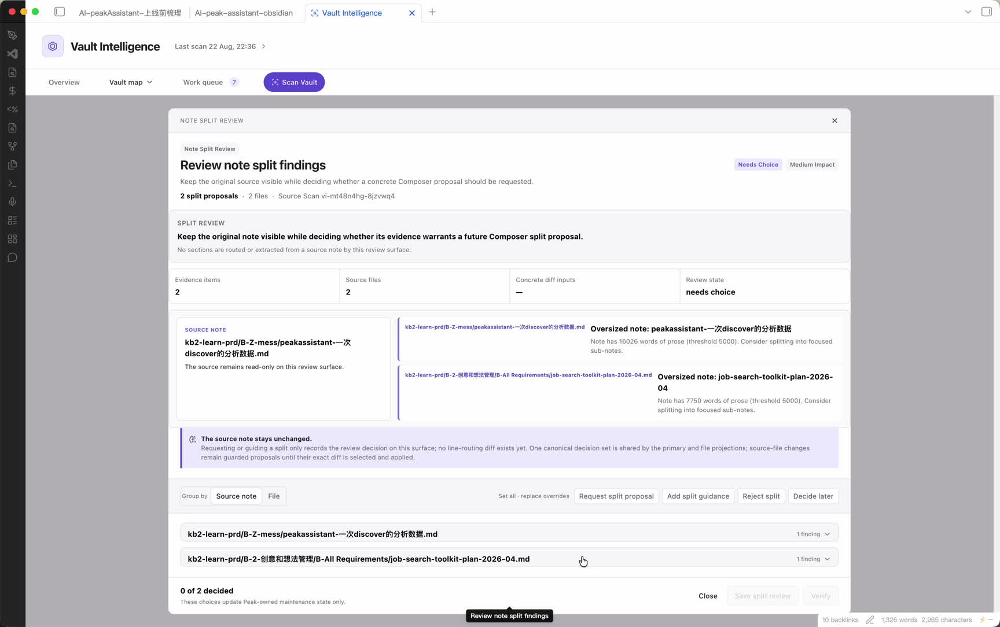
COMPLETED VISUAL NOT COMPARABLE。运行真值与因果链
Mock JS 不是动画装饰：它规定 per-document 流水、Vault-wide lifecycle、Publish 重叠和每个 operation 的可观察证据。Production 当前执行链在六处断开。
Mock execution contract
Discover 0% → local/core index 15% → per-file AI 20–73% 并随 ready document 流动 → Vault-wide evidence/discover/review/follow-up 54% 起 → Publish 88% 起；最后 AI operation 可持续到 99%。每一步展示 current input、substep、evidence、tokens/spend 与 stop boundary。
Production execution reality
executeRun() 只做 Discover → Promise.all(performIndex, performAi) → Publish。performIndex() 内部又严格 await core → vector → LLM → lint；performAi() 则在 index 尚未 ready 时启动一个共享 Review。UI 看到的“并行”不是 Mock 的文档流水线。
逐屏、逐 subtree 审计
本节把每一屏拆成 primary job、render tree、读取数据、写入状态、交互和入口/出口。实现者可以按 screen 顺序阅读，而不是在 34 行总表里猜具体该替换什么。
Screen 01Scan setup冻结 scope、checks、Index outputs、AI operations、model routes 和 estimate
- Primary job
- 让 owner 在启动前看到同一份 frozen plan：扫描什么、运行什么、实际使用哪个模型、预计成本、哪些能力不可用、是否会写用户文件。
- Reference reads
- changed baseline、Vault object counts、scope candidates、task/check catalog、Index output availability、model catalog/pricing、last completed routes。
- Reference writes
- 只写尚未启动的 plan draft；Start 时冻结 concrete paths、operation switches、route binding、estimate basis 和 consent boundary。
- Actions
- scope mode、browse/search、add/remove scope、toggle checks/outputs/operations、expand groups、pick model、Start scan、recover saved run。
- Empty/error
- 空 selected scope 保留卡片并禁用 Start；route 不可用保留 row 并常驻说明；price 缺失显示 Not available。
- Entry / exit
- 从 View progress、selected type、saved work 或 last-run continuation 进入；Start 后进入 Active run，Back 不得静默丢掉 recoverable plan。
Mock render tree
screen[data-screen="scan-setup"]
└─ scan-setup-shell
├─ scan-setup-overview
│ ├─ scan-setup-hero
│ └─ setup-trust-row (3 facts)
├─ scan-setup-grid
│ ├─ scan-config-scope
│ ├─ scan-config-checks
│ │ └─ scan-index-plan disclosure
│ └─ scan-config-ai-models
│ └─ operation groups / model rows
└─ estimate + footer / StartProduction render tree
ScanSetup
├─ scan-setup-overview
├─ SetupSection(1) scope
├─ SetupSection(2) checks + Index plan
├─ SetupSection(3) AI model groups
└─ estimate / Start
Structural status: mostly ported
Runtime status: selected LLM route not consumed关键断点：selectOperationRoute() 更新了 Setup snapshot，但 runLlmEnrichment() 与 review.run() 没有接收该 route。UI 的“model ready”目前只是计划元数据，不是 execution binding。
Screen 02Active run shell统一展示 overall truth、stage overlap、current work、AI usage 与控制边界
- Primary job
- 让 owner 持续确认 Peak 真的在工作、当前处理对象、已发布证据、真实 provider usage、可安全暂停或停止的位置。
- Reference reads
- frozen plan、fixed total、stage windows、document pipeline events、operation attempts、provider events、usage receipts、warnings。
- Reference writes
- 只记录 inspection selection、expanded operation、pause/stop intent；不能由 UI 推导 terminal state。
- Actions
- inspect stage、Follow live、expand operation、Skip/Stop remaining、Pause at checkpoint、Stop run、Resume。
- Entry / exit
- Start 或 persisted interrupted run 进入；仅当 Publish terminal receipt 已持久化时自动进入 Completed。
Mock hierarchy
active-run
├─ run-focus-hero
│ ├─ state + title + boundary
│ └─ pause / stop controls
├─ overall metrics
│ ├─ fixed percent
│ ├─ processed / elapsed / throughput
│ └─ actual + projected AI
├─ stage-track (4 stages, overlap-aware)
├─ exactly one stage panel
└─ event-stream disclosureProduction hierarchy
RunProgress
├─ pk-vi-run-hero
├─ separate progress-summary card
├─ pk-vi-run-stage-tabs grid
├─ one stage-workspace
└─ pk-vi-run-events
liveStageId = first running stage
overall = recomputed from mutable totals结构判断：这不是同一 render tree。即便色彩、padding 全部调准，独立 progress card、tab grid 和单 live-stage 模型仍无法表达 Mock 的 overlap、fixed denominator 与同屏 current work。
Stage 01Discover冻结可复现输入，而不是只显示“509 objects”
- Reference workspace
- Frozen scan input、current discovery unit、frozen object receipt；三行固定 geometry，即使对象为 0 也不消失。
- Current data
frozenPaths、Discover stage count、plan-scanoperation evidence。- Mismatch
- Production 用 generic stage rows 复用 Publish 文案；没有 selector resolution、affected context、closure revision 或 scope manifest hash。
- Required acceptance
- 同一 run 重启后 frozen path set byte-equivalent；0-object run 诚实显示 empty；动态 scope 变化不改变 active run。
Stage 02Build indexCore Search、vector、per-file AI 和 maintenance checks 的文档流水线
- Reference workspace
- Index metrics、四步 pipeline、Document order table、Current document、每个 document 的 substep state、recent completed context。
- Current runtime
performIndex()先 await 整体 core index，再运行 vector，再运行 summaries/tags，最后 full lint。- Current UI
IndexRunWorkspace展示 current document 和 queue，但缺 source revision、substep attempt、output receipt；顺序和分栏也与 Mock 相反。- Empty/error
- 无 pending LLM document 时应显示 0 eligible / no pending work；provider 不可用时保留 operation row 并标 unavailable，不能显示 completed 0/0。
- Required acceptance
- doc A core-ready 后可启动 A 的后续 substeps，不等待 doc Z；每一步能区分 queued/running/skipped/failed/completed，并能追到 output checksum。
当前矛盾：Production UI 文案写着 “Runs as each eligible document becomes ready”，但 runtime 明确在整个 runCoreIndex() 返回后才调用 enrichment。这是 UI 与执行真值冲突，不是视觉差异。
Stage 03AI work每个 operation 的真实 stream 与 Vault-wide lifecycle
- Reference per-file
- File summaries 与 AI Tags 各有 operation row、process timeline、current input、evidence produced、model/provider、usage/spend、Skip。
- Reference Vault-wide
- Relationship discovery、semantic review、community analysis、hub/bridge analysis、file proposals、maintenance synthesis 各有独立可观察结果；共享 execution 必须显式关联。
- Production state
- 六个 Vault-wide row 共享一个
review.run({mode:'fast'})；同一个 eventCount/evidenceCount 被复制到每行，usage 只写第一行。 - Production UI
- flat
<details>只有 started/completed/evidence string；没有 first token、stable prefix、result reference、attempt/retry、shared execution id。 - Required acceptance
- 每行可回答：是否真实调用、实际 route、何时收到首 token、当前稳定输出、产生哪些可引用 evidence、为何 stopped/skipped/failed。
Stage 04Publish发布已验证 machine state、派生 follow-up、冻结 run receipt
- Reference workspace
- Publish verified Index layers、Vault map machine state、Follow-up and receipts；optional AI partial 不阻塞已验证 Core Search。
- Current runtime
- 运行 global maintenance，读取 latest lint，调用
deriveVaultMaintenanceTasks()，构建 CompletedRun，随后直接 status=completed。 - Missing adapter
finalSnapshot.collectorSnapshot的 findings、gaps、actions、file proposals 没有进入 task derivation。- Required acceptance
- 每个 publish layer 有 independently verified receipt；follow-up 可追到 deterministic finding 或 AI evidence；零任务仍有 honest empty receipt。
Screen 03Completed先说明 Peak 已完成什么，再说明仍需要 owner 做什么
- Reference order
- Scan complete hero → Run details disclosure → Completed automatically disclosure → Needs you Work queue。
- Reference receipt
- actual models、tokens、spend、operation completion；provider calls 可继续 inspect。
- Production gap
- model slot 固定 Not available；operation completion 仅基于 generic receipts；0-token false completion 会被永久写入 completed summary。
- Entry / exit
- 从 terminal Publish 自动进入一次；可回 Run progress 检查历史，也可进入具体 task；返回时保持 queue filter/scroll。
- Not comparable
- 录屏最终打开了 Property Maintenance，未提供与 Mock 相同 fixture 的 Completed resting screenshot，因此只验证了 transition，不宣称视觉完成。
Screen 04Work queue只保存 durable unresolved owner work，不是 Scan 日志或所有 finding 的堆叠
- Reference reads
- canonical maintenance atoms、current owner choice、current suggestion、suggestion version、impact、affected counts、state、exit condition。
- Reference actions
- filter、search、open whole row、Update suggestions、bulk Set all（只改变作用范围，不改变 choice semantics）。
- Current gap
- 真实 7 tasks 应保留；但 Update suggestions 永远返回 runtime unavailable，仍作为正常可提交表单显示。
- Empty/error
- 无 unresolved work 显示 intentional empty；search/filter 无结果与 canonical queue empty 必须是两个状态；load/persist error 不能变成 0 tasks。
- Entry / exit
- 顶层 Work queue 或 Completed Needs you 进入；task overlay 关闭后恢复原 row focus、filter、query 和 scroll anchor。
Screen 05+Result workspace / Proposal / Verify11 种领域问题共享安全 primitives，但不能共享一个 generic 产品模型
- Can share
- overlay、focus trap、Escape、outside click、focus restoration、header/footer frame、source revision guard、diff selection primitive。
- Cannot share
- 用户问题、evidence organization、available actions、owner-surface handoff、write boundary、exit verifier、reopen trigger。
- Current structure
TaskSpecificWorkspace只对 note-split、content-lifecycle、unreadable-files 有局部布局；其余类型共享 matrix/relationship callout，顶部最多取 3 个 atomic item。- Required exit
- choice saved 不等于 applied；applied 不等于 verified；verified 必须来自 fresh evidence；证据 revision 变化时可 reopen 且保留 owner history。
三段真实录屏时间线
以下时间点是人工逐帧观察，不从 UI 文案反推 runtime。每个异常都与源码调用链交叉验证。
22:31:16 · 首次长扫描
- Build IndexDiscover 已完成；Build Index running；AI work 已显示 Completed；AI usage 0。
- 静止长时间页面无新对象级证据，只有 generic “Running maintenance checks”。
- 79%Optional AI work skipped；embedding/summaries/tags 显示 Completed 0 tokens；六个 Vault-wide operation skipped。
- Publish页面继续依靠 stage/event 文案，仍无 provider receipt 或 stream evidence。
- FinishedScan 完成，AI 仍为 0 usage。
22:55:34 · Work queue / results
- Queue真实 7 个 task，全部 Needs Choice；数量本身不是 mismatch。
- PropertiesProperty result 有领域标题，但仍使用 generic overlay/choice frame。
- Broken links顶部 evidence 只显示最多 3 项，缺 repair/create/redirect/remove/rerun/reopen 流程。
- Note split有局部专用布局，但 Draft in Composer、Apply、re-index、Verify 没有连续状态反馈。
23:51:23 · 最强运行真值证据
- Setup9 operations/models ready，509 selected。
- 81%Index 323/509；AI work 已 Completed；AI usage 0。
- AI detail所有 per-file operation 仍 Not started/Not completed，Vault-wide lifecycle 却全 Complete。
- 76%整体进度从 81% 回退；core index 509/509，embedding 仍 running，AI enriched 142/501。
- 502/502embedding 501/501、summaries 502/502、AI tags 502/502 全 Completed，所有 tokens/cost 仍为 0。
- 100%Publish 仍 running，但 overall 已 100%。
- Complete自动跳转后打开 Property Maintenance；Completed resting state 未锁定。
“0 tokens”单独不能证明 provider 一定没调用，因为某些 adapter 可能缺 usage；但这里同时存在 route 未传递、completion callback 缺失仍 processed++、operation receipt 不存在、shared usage 被清零四组源码证据。因此“AI 已完成”的状态无法被当前数据合同证明。
15 个 P0 root-cause case files
这些不是待调样式清单，而是会让页面展示错误事实、丢失执行边界或错误关闭任务的问题。每个 case 给出复现条件、代码路径、被破坏的 invariant、最小正确修复边界与自动化证据。
P0-01Setup 选择的 LLM route 没有绑定到执行UI 显示 gemma-3 / Claude / GPT，不代表实际 call 使用它
- Reproduce
- 在 Setup 给 file-summaries、AI tags 或 Vault-wide operation 选择与全局 active Agent 不同的 profile/model；启动 Scan。
- Observed contract
- snapshot 和 CompletedRun 会保存所选 model/provider/profileId，因此 UI 看起来记住了选择。
- Actual call path
selectOperationRoute()→ plan metadata；runLlmEnrichment()只传 SearchSettings/paths；review.run({mode:'fast'})只传 mode/signal；VaultMetaAgentStream.resolveProfileForMode()再读取全局 active Agent/Fast。- Exact evidence
VaultIntelligenceRuntime.ts:237–259, 894–921, 935–960；VaultMetaAgentStream.ts:73–87, 177–194。- Smallest correct fix
- 把 resolved executable route 放入 app-owned run dependency；Index LLM port 与 Vault Review port 都必须显式接收 route。Completed receipt 从 actual attempt 生成，不再从 plan 回填。
Broken invariant：plannedRoute === actualRoute，或在 provider 发生受控 fallback 时持久化 fallbackReason 与实际 route。
- provider spy：选择 route B 后 adapter B 被调用，A 未调用。
- restart：persisted plan 恢复后仍绑定相同 executable profile revision。
- failure：route 不再 executable 时 operation 进入 unavailable/failed，不得改用全局模型。
P0-02Per-document AI 不是文档流水线UI 文案承诺 ready-as-you-go，runtime 实际 whole-stage barrier
- Reproduce
- 用多个文件启动包含 Core Search、embedding、summary、AI Tags 的 Scan，观察首个 summary 的开始时间。
- Actual order
await runCoreIndex(all paths)→await runVectorEnrichment(all paths)→await runLlmEnrichment(all paths)→await lint.runFullScan()。- Mock order
- 每个 document core-ready 后进入后续 substep；document order、current document、recent completed 均保留可见。
- Exact evidence
VaultIntelligenceRuntime.ts:820–855；UI 声明位于VaultIntelligenceWorkspace.tsx:1304。- Smallest correct fix
- 让 core index 发布 typed document-ready event；每个后续 operation 消费同一 frozen document queue，并为每个 path 保存 substep receipt。并发上限仍由现有 pool/配置控制。
Broken invariant：对于任意文档 A，A 的 eligible downstream 可以在最后文档 Z core-ready 前开始；同一文档的 substep 仍保持依赖顺序。
- deferred promises：A core-ready 后 summary(A) 已调用，Z 仍 blocked。
- pause：A 当前 durable unit 完成后，不再 dequeue B。
- UI fixture：current document 每个 substep 与 runtime receipt 一致。
P0-03Partial scope 的 Vault-wide operation 合同自相矛盾Setup 可见/可配，normalizePlan 又静默改成 disabled
- Reproduce
- 选择单文件或文件夹，打开 Vault-wide group 并启用六个 operation，Start。
- Runtime mutation
normalizePlan()在 scope 非 entire 时，把 execution group 包含 relationship-discovery 的所有 operation 改为 disabled。- UI contradiction
operationAvailableForScope()与 Setup 文案允许配置；Mock 说明 changed evidence 会与 complete graph baseline 比较。- Test contradiction
vault-intelligence-runtime.test.ts:347–359明确断言 partial scope 必须 skipped，锁住了偏离 Reference 的行为。- Smallest correct fix
- 定义 scope closure adapter：selected/changed paths 是 changed evidence，Vault-wide review 读取 current complete graph baseline；仅在 baseline 不可用时 unavailable，并常驻原因。
Broken invariant：Start 后 frozen plan 不得静默改变 owner 已确认的 operation switches。
P0-04没有 LLM completion receipt 仍 processed++ 并 Completed直接解释 502/502、0 tokens、US$0
- Reproduce
- 让
indexDocument()返回但不触发onLlmIndexingComplete，且不抛异常。 - False success path
runPendingLlmIndexEnrichment()无条件processed++；telemetry snapshot 为 null 时使用 emptyUsage；Runtime 只看 errors 数组为空，随后把 summaries 与 AI Tags 均标 completed。- Exact evidence
indexService.ts:2300–2343；VaultIntelligenceRuntime.ts:894–933；录屏 23:51 的 00:02:00。- Why 502 not 509
- 分母来自 pending eligible paths，而不是 frozen objects；当前 UI 没解释 eligible 口径，因此 509/509、501/501、502/502 同时出现但互相不可理解。
- Smallest correct fix
- 每个 requested output 返回 explicit outcome：produced / already-current / ineligible / skipped / failed；只有 produced/already-current 才计入 successful denominator。缺 callback 是 contract failure。
Broken invariant：completed 必须由 output receipt 证明，不能由“函数没有 throw”推导。
- callback absent → operation partial/failed，processedSuccess 不增加。
- usage unavailable 但 output receipt 存在 → Completed 可成立，usage 显示 Not available 而不是 0。
- already-current → 单独计数，不能伪装本次 provider output。
P0-05六个 Vault-wide row 共享一次执行，却没有共享收据主键第一行拿 usage，其他五行被写成 EMPTY_USAGE
- Reproduce
- Entire Vault scope 启用任意两个以上 Vault-wide operation，并让 Review 完成。
- Current behavior
- 一次
review.run()产生一个 session snapshot；所有行复制相同 eventCount/evidenceCount；只有 enabled[0] 保存 usage。 - UI workaround
RunOperation只有在 owner usage > 0 时显示 Shared receipt；usage 缺失时 sibling 看起来像独立 0-token operation。- Exact evidence
VaultIntelligenceRuntime.ts:935–1020；VaultIntelligenceWorkspace.tsx:1312。- Smallest correct fix
- 生成
executionId；共享 attempt 保存一次 route/usage/provider events；每个 operation 保存 projection outcome 与sharedExecutionId。
Broken invariant：同一个 provider call 不能复制为六个独立 call，也不能把五个 operation 表示成 0-token success。
P0-06Overall progress 的 denominator 会变化且失败/跳过被计满81% → 76%，Publish running → 100%
- Reproduce
- 运行 frozen objects 与 operation total 在不同时间才变为已知的 Scan；包含 skipped/failed operation。
- Current formula
scanProgressMetric()汇总 stage/operation 的动态 total；unknown 使用 fallback unit；terminal skipped/failed/partial 视为 full processed。- Observed evidence
- 23:51 录屏 00:00:32 为 81%，00:01:12 为 76%，00:02:24 Publish running 时 100%。
- Smallest correct fix
- Start 时冻结 progress ledger；新增 work unit 只能来自 frozen plan adapter，不能运行中扩 denominator；completed、failed、skipped 分开累计，overall 100 由 terminal run gate 决定。
- Number disclosure
- UI 明示 objects processed / frozen objects、operations terminal / selected operations、actual tokens / provider receipts；不得把不同 denominator 混成一个“Objects”。
Broken invariant：同一 frozen run 的 overall percent 单调不降；100% 仅在 required publish receipt terminal 后成立。
- property-based：任意合法 event ordering 下 percent 单调且在 0…100。
- skipped/failed 不增加 success numerator。
- unknown total 不更换 denominator；UI 显示 indeterminate submetric。
P0-07AI Review 结果没有进入 Work queuefile-proposals / maintenance-synthesis 做完也不影响任务
- Reproduce
- 让 Review collector 产生 findings/gaps/actions/proposal candidates，同时 lint 返回空。
- Current Publish input
- 只读取
loadLatestScan().findings与indexErrors，传给deriveVaultMaintenanceTasks()。 - Dropped data
finalSnapshot.collectorSnapshot只用于运行中 evidence count 和 saveReport；未传入 Publish/task adapter。- Exact evidence
VaultIntelligenceRuntime.ts:964–978, 990–1013, 1039–1061；VaultIntelligenceModel.ts:172–256。- Smallest correct fix
- 建立 AI evidence → canonical atom adapter，按 semantic identity 与 deterministic finding 合并；AI suggestion 不覆盖 owner choice；只有满足 durable owner-action + verifiable exit 才进入 Queue。
Broken invariant：任何 UI 宣称完成的 file-proposals 或 maintenance-synthesis 必须有可追踪 output，或明确显示 “0 outputs”；不能做完后无消费者。
P0-08Pause at checkpoint 实际没有 unit checkpoint只设置 stopRequested，等待整个 Promise.all 边界
- Reproduce
- 在 core index 或 Vault Review 长操作中点击 Pause。
- Current behavior
requestPause()把 run 改为 stopping；不 abort active work；stopAtCheckpoint()只在 Discover 后和整个 Index+AI Promise.all 后检查。- Misleading copy
- UI title 说 “Finish the current durable unit”，但 runtime 没有 durable unit id、checkpoint cursor 或 persisted attempt boundary。
- Smallest correct fix
- document pipeline 在每个 path/substep 完成后检查 pause intent；Vault Review 在 durable round/event boundary 检查；持久化 pending/running/completed unit ledger。
- Resume requirement
- 插件 reload 后只恢复 pending unit；已提交 output receipt 不重复调用 provider。
Broken invariant：Pause accepted 后不得 dequeue 新 durable unit。
P0-09Stop 后 core index 可能继续写shared abortController 不属于 runCoreIndex child work
- Reproduce
- 让
runCoreIndex()长时间 pending；同时让 Review 被 abort 后 reject；点击 Stop。 - Race
- Stop aborts Review signal；
Promise.all立即 reject 并把 run 设 interrupted；未接收 signal 的 core index promise 仍在后台运行并可 patch/write。 - Exact evidence
VaultIntelligenceRuntime.ts:281–290, 774–792, 820–830；Index port 签名没有 run-owned abort signal。- Smallest correct fix
- 每个 child operation 注册到 run task group；Stop 广播 signal；runtime 等待所有 children settle/join 后才发布 terminal interrupted receipt；late callback 必须被 run generation guard 拒绝。
- Persistence
- terminal receipt 保存每个 child 的 final outcome；restart 不得把未 join 的旧 generation 事件写入新 run。
Broken invariant：run terminal 后，不允许任何该 run 的新 write、progress event 或 receipt mutation。
P0-10Partial stage 被写进 completedStages，Resume 会跳过恢复逻辑只看 ID 是否存在，不看终态
- Reproduce
- 让 Review runtime unavailable 或返回 non-completed final snapshot，AI stage 进入 partial；持久化后 Resume。
- Current behavior
completeStage(..., 'partial')仍把 id 加入 completedStages；executeRun()看到 id 后跳过整个 AI stage。- Exact evidence
VaultIntelligenceRuntime.ts:776–783, 945–950, 1015–1020, 1193–1202。- Smallest correct fix
- 删除 completedStages 作为并行 truth；每个 stage/operation/attempt 以 terminal outcome 与 retry policy 决定 resume plan。partial 本身不是“跳过全部”的条件。
- Compatibility
- 持久化 schema migration 必须把旧 completedStages 与 stage.status 交叉解释，不能把旧 partial 自动升级为 completed。
Broken invariant：Resume 只能跳过有 completed receipt 的 unit。
P0-11Update suggestions 是可提交的 dead control用户动作必然得到“不支持”，但入口仍像正常能力
- Reproduce
- 在 Work queue 或 Completed 输入任意非空 instruction，点击 Update suggestions。
- Current behavior
- 只设置本地 receipt string：runtime unavailable、nothing saved、no tasks changed。
- Exact evidence
VaultIntelligenceWorkspace.tsx:852–869。- Reference behavior
- 按 task/atom evidence 重新计算 suggestion，生成 suggestion version/history，但不写 owner choice 或用户文件。
- Smallest correct fix
- 新增 typed suggestion-update capability；不可用时 input/button disabled 且常驻原因；可用时保存 instruction、input revisions、output version、changed atom ids、provider receipt。
Broken invariant：看起来可执行的 primary control 必须有真实 action contract；不可用不能等到 submit 后才揭示。
P0-12Finding ID 被当成 canonical atom identity历史 owner choice 只在新 finding.id 完全相同时继承
- Reproduce
- 同一 semantic issue 在后续 detector run 产生新 finding id，但 path/signal/target/evidence identity 相同。
- Current behavior
atomicItem.id = finding.id；previousChoices 以 id lookup；task id 仅按 kind 固定。- Exact evidence
VaultIntelligenceModel.ts:181–205, 236–253。- Risk
- owner choice 可能丢失或同一问题重新出现为未处理；反向情况也可能因复用 id 继承到不同 evidence revision。
- Smallest correct fix
- 每个 kind 定义 semantic identity key；finding id 只做 source evidence reference。Atom 保留 current finding refs 和 revision history。
Broken invariant：当前 owner choice 的优先级高于新 suggestion；继承依据必须是问题 identity，不是一次 detector row id。
P0-13Unreadable retry 没验证实际进入 current IndexrunCoreIndex 返回后直接把 task 标 verified
- Reproduce
- unreadable task 选择 retry，让 runCoreIndex 返回但文件仍解析失败或未出现在 current indexed-path coverage。
- Current behavior
verifyTask()调用 runCoreIndex(retryPaths)，不读取结果、不查 coverage、不重新匹配 index error，随后所有 ownerChoice status=verified。- Exact evidence
VaultIntelligenceRuntime.ts:607–623。- Smallest correct fix
- Retry 建立 recovery attempt；验证 path 当前 coverage、loader/parser outcome 与 exclusion policy。成功、仍失败、明确排除分别形成不同 receipt。
- UI requirement
- Result workspace 展示 queued/running/rechecking/verified/still unreadable；不能点击后瞬间关闭。
Broken invariant：“Retry command returned” 不等于 “file is readable and indexed”。
P0-14Verify 不是每种 task 的 fresh-evidence exit gate无 proposal path 的 Peak-owned choice 可直接 verified
- Reproduce
- 对 Community membership 等 Peak-owned choice 保存选择并调用 Verify；不产生 proposal path。
- Current behavior
- 只有存在 applied proposal path 才 re-index + lint；其他 task 直接将 choice 和 task 标 verified。
- Secondary bug
- 即便跑 lint，stillOpen 也以原 sourceFindingId 与新 finding.id exact-match；detector 重新分配 id 时可能误关。
- Exact evidence
VaultIntelligenceRuntime.ts:573–627；现有测试runtime.test.ts:274–281把 direct verification 当正确行为。- Smallest correct fix
- 配置/代码为每种 kind 注册 verifier：lint finding、graph membership、edge state、source diff、index coverage 或 time policy；所有 verifier 返回 typed receipt。
Broken invariant：task.state=verified 只能由 fresh verifier receipt 产生，不能由 owner choice 的存在推导。
- finding id 改变、semantic key 相同 → 仍 open。
- Peak-owned graph choice → recompute 后验证 projection。
- new evidence revision 与 verification baseline 不同 → reopened，owner history 保留。
P0-15现有 parity tests 证明“字符串存在”，没有证明产品状态会阻止真正的 root-cause 修复并给出虚假绿灯
- Current proof
vault-intelligence-rendered-parity.test.ts大量assert.match(source, /class-or-copy/)；只证明源码文本包含 selector/文案。- False-positive example
- 测试检查 Run 有 stage tabs、AI workbench、auto transition，却无法发现 81%→76%、0-token Completed、route 未调用或 Stop race。
- Wrong locked behavior
- runtime test 明确要求 partial scope Vault-wide operations skipped；另一个 fake enrichment 返回 processed=1/errors=[]、没有 usage/receipt，仍被当作成功。
- Smallest correct fix
- 保留少量 boundary/source tests；parity 主证据改为真实 component + typed fixture DOM assertions、runtime state-machine tests、provider spies、geometry harness 和 real-host interaction。
- Do not do
- 不能简单删掉失败测试让 build 变绿；先用正确 invariant 测试替换，再改 runtime/UI。
Broken invariant：测试名称中的 “parity” 必须对应可观察 contract，而不是 selector token inventory。
Mock → Production component mapping
| Reference subtree | 当前 Production | 判定 | 处理 |
|---|---|---|---|
| Scan Setup hero / trust / three sections / operation groups / estimate | ScanSetup · Workspace.tsx:875 | 部分保留 | 保留现有新 Setup 框架；只修 route/data/state truth，不重做已收敛的 geometry。 |
| Progress hero + metric strip + horizontal stage track | RunProgress · :1219 | STRUCTURE | 以 Mock hierarchy 重建，不继续在旧 card + tab grid 上叠 CSS。 |
| Discover workspace | generic stage rows | STRUCTURE | 端到端迁移 frozen scope / current work / receipt 三行模型。 |
| Index metrics + pipeline + document order / current document | IndexRunWorkspace · :1277 | STRUCTURE | 替换 subtree；接入 document pipeline receipt。 |
| Per-file AI timeline + Vault-wide lifecycle | AiRunWorkspace · :1300 | DATA + STRUCTURE | 替换 flat <details>；先提供 attempt/stream/evidence receipts。 |
| Publish workspace | generic stage rows | STRUCTURE | 迁移 publish facts / follow-up derivation / immutable receipt。 |
| Compact Completed + disclosures + Needs you | Completed · :1315 | STRUCTURE | 重排为 receipt-first；移除与 Mock 不一致的首屏五项 stat 密度。 |
| Queue controls + compact rows | WorkSurface · :852 | DATA | 保留真实 7 项，不造 11/48；使 Update suggestions 真正执行或诚实 disabled。 |
| 11 task-specific result workspaces | MaintenanceWorkspace + TaskSpecificWorkspace · :1336/:1395 | STRUCTURE | 保留 overlay primitive；替换 generic body / callout / atomic choice subtree 为领域工作区。 |
| Per-file combined diff → Apply → Re-index → Verify | ProposalWorkspace · :1455 | 基础可用 | 保留 source hash fail-closed；补 combined diff、progress、receipt、fresh verification 与 reopen。 |
P0/P1 mismatch matrix
每一项都包含 Mock state、Production state、根因、精确位置和验收证据。除最后的 CDP 宿主验证外，均属于 PARITY_FIX；没有已批准的产品偏离。
| ID | 优先级 | 分类 | Mock / Production mismatch | Root cause + exact files/selectors | Acceptance evidence |
|---|---|---|---|---|---|
| SCAN-01 | P0 | DATA_CONTRACT | Setup 选择的 operation profile/model 必须控制调用；当前 LLM enrichment 与 Review 未接收 route。 | Runtime.ts:894–933, 959；VaultMetaAgentStream.ts:73–87 回退全局 active/fast profile。 | 每个 attempt receipt 的 plannedRoute = actualRoute；provider spy 证明选择不同模型会改变实际 adapter call。 |
| SCAN-02 | P0 | STATE_MISMATCH | Mock：document core-ready 后 per-file AI 即开始；当前：整个 core index 完成后才 vector 和 LLM。 | Runtime.ts:820–855 串行 await；没有 document-ready queue。 | 事件时间线证明 doc N 的 summary 可早于最后一个 doc core-index completion；UI 同步展示 stable prefix。 |
| SCAN-03 | P0 | STATE_MISMATCH | Mock 可配置 scope；当前 partial scope 静默禁用 6 个 Vault-wide operation，UI 又声称 available。 | Runtime.ts:1381–1414 vs Workspace.tsx:1765–1773；错误行为被 runtime.test.ts:347–359 固化。 | selected files/folders 的实际 operation matrix 与 Setup 一致；若确需 Entire Vault，Mock/文档/owner 批准 delta 后常驻解释。 |
| SCAN-04 | P0 | DATA_CONTRACT | Mock completed 要有 provider evidence；当前 502/502 summaries/tags 可在 0 tokens、0 receipt 下 Completed。 | indexService.ts:2198–2343 processed++ 不要求 LLM completion；Runtime.ts:899–931 仅按 batch error 判终态。 | 无 provider success receipt 时只能 unavailable/failed/skipped；真实调用至少有 request id 或 provider+model+timestamps+usage/result checksum。 |
| SCAN-05 | P0 | DATA_CONTRACT | 六个 Vault-wide operation 在 Mock 中各自有 lifecycle/receipt；当前共享一次 Review，只把 usage 给第一项，其他项空 usage。 | Runtime.ts:935–1015，特别是 index === 0 ? usage : EMPTY_USAGE。 | 共享执行用 stable executionId + per-operation output refs；每行能追到同一 shared receipt，而非伪装独立 0-token completion。 |
| SCAN-06 | P0 | STATE_MISMATCH | Mock overall progress 单调且口径可解释；视频 81% → 76%，Publish running 时 100%。 | Workspace.tsx:1847–1870 动态 fallback denominator；skipped/failed/partial 被计满。 | 属性测试：同一 frozen plan 下 percent 单调 0…100；100 仅当 required terminal + publish completed；UI 展示 numerator/denominator/source。 |
| SCAN-07 | P1 | STATE_MISMATCH | Mock stage track 可同时表达 live overlap；当前 deriveLiveStageId 只取第一个 running。 | Workspace.tsx:1831–1845 单一 stage id；Run hero 的 current work 因此不完整。 | Index+AI overlap fixture 同时有 live indicators；用户 inspection 不改 live truth，Follow live 恢复正确 anchor。 |
| SCAN-08 | P0 | DATA_CONTRACT | Mock AI findings/synthesis 进入 Needs you；当前 Publish 只从 lint + indexErrors 派生 tasks。 | Runtime.ts:1053 → Model.ts:172–256；Review collector/proposals 未进入 adapter。 | fixture 中 AI evidence 可产生/更新 canonical atom，带 provenance；相同 atom 不重复；无 AI 时 deterministic findings 仍诚实可用。 |
| SCAN-09 | P0 | STATE_MISMATCH | Pause at checkpoint 应完成当前 durable unit 后停；当前仅设置 stopRequested，直到 Promise.all 结束后检查。 | Runtime.ts:270–279, 774–789, 1181–1187；没有 durable unit checkpoint cursor。 | 视频/测试证明 pause 后不启动下一 document/attempt；重启插件后从 persisted checkpoint 恢复。 |
| SCAN-10 | P0 | STATE_MISMATCH | Stop 必须停止 active work；当前 abort 只覆盖共享 AI，core index 无 signal，Promise.all rejection 后索引可能继续写。 | Runtime.ts:281–291, 774–800, 820–855；Index port 没有 abort ownership。 | stop race 测试：terminal interrupted 后无新 write/event/progress；所有 child work join/settle 后才发布 interrupted receipt。 |
| SCAN-11 | P0 | STATE_MISMATCH | Partial stage 应可恢复未完成 work；当前 completeStage 无论 partial 都加入 completedStages，resume 会跳过。 | Runtime.ts:1193–1202 + :776–783。 | partial fixture resume 后只重试 pending/retryable attempts；completed facts 不重复；最终 receipt 明确 attempts。 |
| SCAN-12 | P1 | STATE_MISMATCH | AI 全部 disabled/skipped 时不应显示绿色 Completed；当前 enabled=0 直接 completeStage(ai)。 | Runtime.ts:935–949, 984；UI terminal badge 未区分 no-work/skipped/completed。 | stage state 至少区分 not-selected / skipped / partial / failed / completed；overall receipt 明示 deterministic-only run。 |
| SCAN-13 | P1 | DATA_CONTRACT | Mock Plan this scan 是可观察 AI operation；当前代码称 local planning 并排除 estimate/call。 | normalizePlan/selectOperationRoute 与 Setup 文案/Mock JS 冲突。 | 按唯一 reference 实现 AI planning receipt；若产品坚持 local，必须形成 owner-approved delta，并同步 Mock/文档/常驻说明。 |
| RUN-01 | P1 | STRUCTURE | Progress hero、facts、stage track hierarchy 与 Mock 不同。 | RunProgress · Workspace.tsx:1219–1275；CSS .pk-vi-run-* 20555+ / 24072+。 | 固定 viewport DOM hierarchy/geometry snapshot；reference/current/overlay 无 P0/P1 alignment、clipping、density drift。 |
| RUN-02 | P1 | STRUCTURE | Index workbench 顺序/分栏/metrics/pipeline 与 Mock 不同。 | IndexRunWorkspace · :1277；.pk-vi-index-live-workbench。 | 左 queue / 右 current doc；4 substep state、current input、counts、empty geometry 均按 reference。 |
| RUN-03 | P1 | STRUCTURE | AI work 是 flat details；没有流式 timeline/current input/evidence produced/first token。 | AiRunWorkspace · :1300；.pk-vi-run-operation 20984+。 | per-operation timeline 与 Vault-wide lifecycle 同屏；provider streaming fixture 和 real video 能看到 stable-prefix movement。 |
| RUN-04 | P1 | STRUCTURE | Publish 复用 generic stage rows，未展示 reference 的 publish facts。 | RunProgress generic pk-vi-run-stage-rows。 | machine facts / follow-up derivation / receipt 三组保持 geometry，即使 0 tasks 也显示 honest empty。 |
| COMP-01 | P1 | STRUCTURE | Mock 先 compact receipt/disclosures，再 Needs you；当前首屏插入 5-stat row，model slot 常为 Not available。 | Completed · :1315；actual route/receipt 缺失导致 model metadata 空。 | 同 reference order/density；run detail 数字可追 numerator、denominator、来源；0 AI 显示 Not run 而非成功 0。 |
| QUEUE-01 | P0 | STATE_MISMATCH | Update suggestions 在 Mock 是有效动作；当前提交后只显示“not available”，不改变任何数据。 | WorkSurface · Workspace.tsx:852–869。 | 有 capability 时产生 versioned suggestion receipt/history；无 capability 时 disabled + 常驻原因，不显示可提交的假入口。 |
| QUEUE-02 | P1 | DATA_CONTRACT | Queue row 需要 current owner choice、current suggestion、historical evidence、verifiable exit；当前 task/atom 字段不足。 | src/core/types/vault-intelligence.ts maintenance types；WorkSurface rendering。 | owner-choice precedence tests；row status/source/impact/count 都有 explicit field，无 generic label/count/detail 拼装。 |
| ITEM-01 | P0 | DATA_CONTRACT | Mock 每个结果是 canonical atom 的不同 projection；当前顶部只 slice(0,3)，其余落入 generic choices。 | MaintenanceWorkspace · :1336–1393；TaskSpecificWorkspace · :1395。 | 同 atom 在 Queue/Completed/detail/proposal 保持 stable ID、choice、suggestion version、source revision 与 exit receipt。 |
| ITEM-02 | P1 | STRUCTURE | File properties 缺 continuous saved review、per-file diff、edit/apply/reject/conflict。 | generic TaskWorkspaceCallout / atomic button matrix。 | Mock actions 全覆盖；冲突/partial apply/history/continue saved work 有独立状态。 |
| ITEM-03 | P1 | STRUCTURE | Broken links 缺 target/create/redirect/remove/mark fixed/rerun/reopen。 | generic choices + top 3 evidence preview。 | exact reference、target existence、repair proposal、rerun detector、verified/reopened receipts 完整。 |
| ITEM-04 | P1 | STRUCTURE | Community membership / knowledge connections 缺 File Atlas、Connect/Keep separate、Ask AI、Bridge lifecycle。 | 大多只提供 runtime.openFile，没有 typed surface handoff。 | 真实 File Atlas/Composer context handoff；返回后恢复 task/atom/scroll/focus。 |
| ITEM-05 | P1 | STRUCTURE | Related notes / note split 缺 merge/keep/alias 与 Draft in Composer/split 的领域流程。 | TaskSpecificWorkspace 只有 split 有局部专用 layout，动作仍 generic。 | 每个 action 有 typed capability、proposal boundary、cancel/undo/verify 结果。 |
| ITEM-06 | P1 | STRUCTURE | Community structure/hubs 缺 merge/split/rename 与 create/refresh/retire 工作区。 | 社区类共用 generic relationship matrix。 | graph evidence、member impact、projected diff、owner decision、recompute/verify 一体闭环。 |
| ITEM-07 | P1 | STRUCTURE | Content lifecycle/unusual notes 缺 revisit/archive/snooze 和 intentional/dismiss reason。 | 虽有局部字段，未形成 durable snooze/reason/reopen contract。 | 时间到期/证据变化能 reopen；dismiss reason/history 常驻可查。 |
| ITEM-08 | P0 | STATE_MISMATCH | Unreadable recovery 应重试并验证实际 coverage；当前 runCoreIndex 后可直接 verified。 | verifyTask · Runtime.ts:573–627。 | parser/setup repair progress；path 成功进入 current index 才 close；exclude 有 policy receipt。 |
| PROP-01 | P1 | STATE_MISMATCH | Apply 后状态仍名为 ready-apply，缺 re-index progress 与 verify receipt；同文件多个 patch 未统一。 | ProposalWorkspace · :1455；proposal runtime/state types。 | prepared → applying → applied → reindexing → verifying → verified/conflict/failed；同文件 combined diff 与 deterministic patch ordering。 |
| VERIFY-01 | P0 | STATE_MISMATCH | Peak-owned choice 无 proposal path 时可不跑 fresh detector 就 verified；finding id exact-match 也可能误关。 | Runtime.ts:573–627。 | 每种 task 有 exit verifier；按 semantic identity/evidence key 对比，不依赖易变 finding id；receipt 含 detector revision。 |
| VERIFY-02 | P1 | DATA_CONTRACT | Mock 支持证据变化后 reopen；当前 UI/data 不展示 reopen trigger/history。 | maintenance task/atom types 缺 verification baseline 和 reopen policy。 | 新 evidence revision 触发 reopened；owner 历史保留，旧建议不覆盖当前 choice。 |
| HOST-01 | P1 | HOST_ENVIRONMENT | CSS 存在多代兼容层和 Cascade lock；大量后置 selector/important，结构错误被级联补丁掩盖。 | peak-components.css:20547–21491, 23071–24338。 | 新 reference subtree 单一 root scope；computed geometry 与 direct-port CSS 对应；ancestor overflow、button reset、font/box sizing 实机验证。 |
| TEST-01 | P0 | DATA_CONTRACT | 现有 rendered parity 多为 assert.match(source)，字符串存在不等于 DOM/state/geometry 正确。 | test/vault-intelligence-rendered-parity.test.ts:101–167。 | 真实 component harness + typed fixtures + geometry/interaction assertions；删掉/降级不能证明 parity 的 source-string claims。 |
| HOST-02 | P1 | BLOCKED | 本次无 Obsidian CDP listener，无法精确验证 hover corridor、focus-visible、Escape、outside click、focus restore。 | lsof -nP -iTCP -sTCP:LISTEN | rg '^Obsidian' 无结果；视频仅覆盖可见流程。 | 实现后按 canonical QA 协议锁 SHA/viewport/DPR/theme/zoom/fixture，plugin-only reload + CDP/Playwright + Computer Use 最终截图。 |
完整状态矩阵
| Surface | 必须覆盖的状态 | 当前主要缺口 | 验收重点 |
|---|---|---|---|
| Setup | first / changed / recoverable；entire / selected / empty selection；configured / unavailable；operation on/off；group expanded；model picker open/empty/error | route selection 与 actual runtime 脱节；partial-scope contract 冲突 | outside click、Escape、focus restore；disabled reason 常驻；empty scope 不隐藏 geometry |
| Run | idle / running / pausing / paused / stopping / interrupted / resuming / failed / completed | pausing/stopping 没有 durable child-work ownership | terminal truth、monotonic progress、checkpoint persistence |
| Stage | waiting / running / inspected / partial / skipped / failed / completed；overlapping live stages | partial/skipped 容易被展示为 completed；单一 live stage | live 与 selected 分离；失败/跳过不计作成功工作量 |
| Operation | not-selected / queued / running / streaming / stopping / skipped / failed / completed / retrying | 没有 attempt/first-token/stable-prefix/receipt；0 usage completed | planned route、actual route、provider result、usage、evidence 一一可追 |
| Work queue | loading / empty / error / populated；filter selected；search no-result；row hover/focus/selected；suggestion updating/failed/versioned | Update suggestions 是可提交的 dead control | 真实数据，不造分布；空状态保留表格/controls geometry |
| Result workspace | rest / hover / focus / selected / expanded；saved draft / conflict / unavailable capability / error；overlay open/close | generic body 压平 11 类领域动作；只显示 top 3 evidence | keyboard、Escape、outside click、focus restore；current choice 常驻 |
| Proposal | preparing / ready / source-stale / applying / partial / applied / reindexing / verifying / verified / conflict / failed | Apply 后状态命名和后续进度不真实 | source hash fail-closed、combined diff、exact write set、receipt |
| Verification | queued / running / passed / failed / inconclusive / reopened | 部分 choice 直接 verified；无 reopen baseline | fresh detector evidence、semantic identity、revision-based reopen |
字段级数据合同与状态不变量
下面的 TypeScript 是 illustrative proposed contract，用于说明 UI 必须得到哪些事实，不要求逐字采用命名。关键要求是运行时生产事实、adapter 组织事实、UI 只投影事实。
1. Operation attempt：证明实际调用，而不是重复 plan 元数据
// Proposed — src/core/types/vault-intelligence.ts
type VaultAttemptOutcome =
| 'queued' | 'running' | 'stopping'
| 'produced' | 'already-current' | 'skipped'
| 'unavailable' | 'failed' | 'cancelled';
interface VaultOperationAttemptReceipt {
attemptId: string;
executionId: string;
operationId: VaultScanAiOperationId;
sharedExecutionId: string | null;
plannedRoute: ExecutableModelRoute | null;
actualRoute: ExecutableModelRoute | null;
fallbackReason: string | null;
providerRequestRef: string | null;
outcome: VaultAttemptOutcome;
queuedAt: number;
startedAt: number | null;
firstTokenAt: number | null;
stablePrefixAt: number | null;
finishedAt: number | null;
usage: VaultScanUsage | null; // null = unavailable; zero = known zero
inputRefs: EvidenceRef[];
outputRefs: EvidenceRef[];
error: SerializableRunError | null;
retryOfAttemptId: string | null;
}Nullable usage
当前把缺 telemetry 写成 0，UI 无法区分“真实 0”与“provider 没返回 usage”。
Execution ID
六个 Vault-wide projections 可以共享一次 provider execution；各 row 引用同一主 receipt。
Output references
Completed 的依据是可寻址 output/evidence，而不是函数返回或 processed counter。
2. Document pipeline：支撑 current document 与 substeps
// Proposed
interface VaultDocumentPipelineReceipt {
unitId: string;
runId: string;
path: string;
sourceRevision: { mtime: number; sha256: string | null };
orderIndex: number;
eligibility: Record<VaultDocumentSubstepId, {
eligible: boolean;
reason: string | null;
}>;
substeps: Record<VaultDocumentSubstepId, {
state: 'waiting' | 'running' | 'produced' | 'already-current'
| 'skipped' | 'failed' | 'cancelled';
attemptIds: string[];
outputRefs: EvidenceRef[];
}>;
checkpoint: 'pending' | 'in-flight' | 'durable';
}| Substep | Numerator | Denominator | Empty / unavailable rendering |
|---|---|---|---|
| Core Search | durable core receipts | frozen paths eligible for core | 0 eligible；显示 unsupported/excluded breakdown |
| Embeddings | produced + already-current | embedding-eligible frozen revisions | model unavailable 与 no changed vectors 分开 |
| File summaries | summary output refs | summary-eligible revisions | no pending、route unavailable、failed 分开 |
| AI Tags | tag-set output refs | tag-eligible revisions | machine-only boundary 常驻 |
| Maintenance checks | detector completed units | selected applicable detectors | detector unavailable 不计 completed |
3. Frozen progress ledger：让进度单调且可解释
// Proposed invariant-oriented shape
interface VaultProgressLedger {
frozenAt: number;
units: Array<{
id: string;
stage: VaultScanStageId;
kind: 'object' | 'operation' | 'publish-gate';
weight: number; // frozen from config + plan
outcome: 'pending' | 'running' | 'success'
| 'partial' | 'failed' | 'skipped';
}>;
}
successPercent =
sum(weight where outcome === 'success') / sum(all frozen weights)
terminalPercent =
sum(weight where outcome is terminal) / sum(all frozen weights)主进度只能展示一种明确口径。建议主百分比使用 terminal progress，并在旁边拆开 completed、partial、failed、skipped。如果产品使用 success progress，run terminal 时可能低于 100%，Completed hero 必须解释 terminal 与 success coverage 的区别。
4. Canonical maintenance atom：跨 surface 保持同一真值
// Proposed
interface VaultMaintenanceAtom {
atomId: string; // semantic identity, not finding.id
kind: VaultMaintenanceTaskKind;
identityKey: string;
sourceRunIds: string[];
evidenceRevisions: EvidenceRevision[];
currentEvidenceRevision: string;
currentOwnerChoice: VaultMaintenanceOwnerChoice | null;
ownerChoiceHistory: VaultMaintenanceOwnerChoice[];
currentSuggestion: VaultSuggestionVersion | null;
suggestionHistory: VaultSuggestionVersion[];
availableActions: VaultTaskActionCapability[];
writeBoundary: 'peak-owned' | 'proposal-required' | 'external-owner-surface';
exitVerifier: VaultVerifierRef;
latestVerification: VaultVerificationReceipt | null;
reopenPolicy: VaultReopenPolicy;
}- Current owner choice 优先于新的 Peak suggestion；新 suggestion 只能进入 history 或显式提示 conflict。
- 相同 identityKey 的新 evidence revision 更新同一 atom；不同 identityKey 即使 finding id 相同也不能合并。
- Queue 是 atom 的 unresolved projection；verified atom 不进入 queue，但历史仍可从 run receipt 查看。
5. Verification receipt：关闭任务的唯一入口
// Proposed
interface VaultVerificationReceipt {
verificationId: string;
atomId: string;
verifierId: string;
verifierRevision: string;
startedAt: number;
finishedAt: number;
checkedSourceRevisions: EvidenceRef[];
reindexReceiptIds: string[];
beforeEvidenceKeys: string[];
afterEvidenceKeys: string[];
outcome: 'verified' | 'still-open' | 'inconclusive' | 'failed';
reason: string;
reopenBaseline: string | null;
}ownerChoice exists → verified、runCoreIndex returned → verified、old finding.id not found → verified 都不成立。只有适用于该 task kind 的 fresh verifier receipt 才能关闭 atom。
Reference-compatible data contract
正确数据流应是 Production runtime data → presentation adapter → Reference-compatible UI。下面不是新产品对象，而是 Mock 已经要求、Production 当前无法表达的运行证据字段。
ScanExecutionReceipt
runId、frozenPlanRevision、scope manifest/hash、started/completed、terminalReason、stage attempts、actual totals、deterministic-only 标记、publish receipt。
OperationAttemptReceipt
attemptId、executionId、plannedRoute、actualRoute、provider request/reference、queued/start/firstToken/stablePrefix/finish、usage、output refs、error/retry。
DocumentPipelineReceipt
path/source revision、core/vector/summary/tags 各 substep state、current input、output checksum、evidence refs、retry cursor。
VaultReviewEvidence
shared execution id、phase lifecycle、operation-specific projections、citations/confidence/source revisions、synthesis output refs。
MaintenanceAtom
stable semantic id、kind、evidence、finding revision、current owner choice、current suggestion、suggestion history/provenance、capabilities、write boundary、exit verifier、reopen policy。
VerificationReceipt
verifier id/revision、before/after evidence keys、checked paths、re-index receipt、outcome、failure reason、verifiedAt、reopen baseline。
11 类 Result item 交互合同
| Kind | Mock archetype | Reference actions | Production gap | Exit / reopen |
|---|---|---|---|---|
| file-properties | resume + proposal | Continue saved work / diff / edit / apply / reject / resolve conflict | generic choices，无连续 checkpoint/history | re-index properties；source revision 改变时 conflict/reopen |
| broken-links | repair | repair / create / redirect / remove / mark fixed / rerun | 没有 exact target workflow 和 verified receipt | fresh broken-link detector；reference 重现则 reopen |
| community-membership | inspect + ai | File Atlas / connect / keep separate / Ask AI | 缺 typed Atlas/AI handoff | graph recompute；membership evidence change reopen |
| knowledge-connections | inspect + proposal | inspect / update / replace / retire bridge | generic relationship matrix | edge/provenance recheck；bridge returns reopen |
| related-notes | decision + proposal | merge / keep / alias | 无 merge/alias 专用 preview | source/index relation verify |
| note-split | ai + proposal | Draft in Composer / split | 有局部专用区，但 handoff/apply lifecycle 不完整 | Composer return receipt + re-index |
| community-structure | decision | merge / split / rename | generic choices，缺 member impact | community recompute；structure drift reopen |
| community-hubs | proposal | create / refresh / retire | 缺 hub materialization lifecycle | hub artifact/index receipt |
| content-lifecycle | decision | revisit / archive / snooze | snooze/expiry/history 不完整 | due date/evidence change reopen |
| unusual-notes | decision | reintegrate / intentional / dismiss with reason | reason/provenance/history 不完整 | new anomaly evidence reopen |
| unreadable-files | run | retry / exclude / repair parser/setup | 重跑后可直接 verified，未检查真实 coverage | current index coverage or explicit exclusion policy receipt |
11 类 Result item 逐项 dossier
每个 dossier 都回答用户到底在决定什么、需要看到什么证据、哪些动作必须真实存在、哪里发生写入、如何验证关闭、什么变化会 reopen。共同 overlay 不是问题，共同产品模型才是问题。
01 / 11File properties连续批次 review，不是一次性 generic choice
- User question
- Peak 建议的 property/value 是否适合每个文件？哪些接受、编辑、拒绝或稍后处理？
- Reference actions
- Continue saved work、review next、edit value、accept/reject、Update suggestions、Review diff、Apply selected、resolve conflict。
- Reads
- file path、property name、current value/source revision、suggested value/reason、current owner choice、suggestion history、saved cursor。
- Writes
- Review 阶段只写 choice/checkpoint；用户 YAML 只经 per-file combined diff、source hash guard、explicit Apply。
- Exit
- Apply 后 re-index property projection；fresh verifier 确认 intended property/value；source revision 改变则 conflict/reopen。
- Current gap
- generic atomic button rows；没有 saved review cursor、editable value、suggestion version、conflict workspace 和 partial apply history。
02 / 11Broken links每条 exact reference 的 repair workflow
- User question
- 这个 exact link 应指向哪个现有目标、创建目标、删除引用，还是确认 intentional unresolved？
- Reference actions
- Repair target、Create missing note、Redirect、Remove reference、Mark fixed、Update suggestions、Review diff、Re-run detector。
- Reads
- source path/revision、line/heading context、raw link text、missing target、candidate targets、rename receipts、prior decision。
- Writes
- ambiguous repair 走 Proposal；deterministic rename receipt 只有在 Setup policy 明确允许时可自动修复并保留 reversible receipt。
- Exit
- fresh broken-link detector 在 exact semantic identity 上不再 open；target 存在且解析到 intended object。相同 reference 再失效则 reopen。
- Current gap
- 顶部只预览三项；generic redirect/keep choices 没有 exact reference context、candidate reasoning、create/remove path、rerun progress。
03 / 11Community membership在 complete graph context 中决定 note 归属
- User question
- 这篇 note 应连接到建议 Community、另一个 Community、保持独立，还是需要更多 AI 解释？
- Reference actions
- Open in File Atlas、Connect to suggested、Choose another、Keep separate、Ask AI、Update suggestions。
- Reads
- note evidence、candidate Community labels/members、connection strengths、existing owner override、current graph revision、citations。
- Writes
- membership override 是 Peak-owned machine state；不修改 Markdown/YAML。File Atlas 与 Ask AI 通过 typed context handoff。
- Exit
- graph recompute 后 current membership projection 与 owner choice 一致；baseline graph revision 保存。新 evidence 越过 reopen threshold 时 reopen。
- Current gap
- 只有 generic relationship callout 与 choice buttons；无 Atlas/AI handoff、candidate comparison、graph revision 或 recompute receipt。
04 / 11Knowledge connections审查 changed source 对 Bridge/edge 的影响
- User question
- 现有 connection 仍成立、需要替换证据、应该更新，还是应退役这个 Bridge？
- Reference actions
- Inspect evidence、Open File Atlas、Update connection、Replace source、Retire bridge、Ask AI / Draft in Composer。
- Reads
- source/target、edge role/direction、cited passages、source revisions、prior connection history、centrality/bridge impact。
- Writes
- 机器 connection state 为 Peak-owned；若需要补写/改写用户 Note，必须转 Proposal 或 Composer owner surface。
- Exit
- graph edge projection 与 owner decision 一致，citation revisions current；证据失效、target 更换或 edge reappears 时 reopen。
- Current gap
- generic relationship matrix，没有 edge-specific history、source replacement、retire semantics 与 typed owner-surface return point。
05 / 11Related / duplicate notes决定 merge、keep separate 或 alias
- User question
- 这些 notes 是真正重复、相关但独立，还是应建立 alias/redirect？
- Reference actions
- Compare notes、Merge、Keep separate、Create alias、Ask AI、Review combined diff。
- Reads
- group identity、side-by-side excerpts、unique facts、links/backlinks、source revisions、similarity evidence 与 confidence。
- Writes
- Merge/alias 涉及用户文件，必须 per-file proposal；Keep separate 是 Peak-owned suppression with reason。
- Exit
- merge/alias 写入后 re-index；duplicate detector 不再报告相同 semantic group。内容重新趋同时可 reopen。
- Current gap
- 没有 side-by-side comparison、unique-content preservation、combined diff 或 suppression baseline。
06 / 11Note split先在 Composer 形成结构，再审查实际拆分 diff
- User question
- 这篇 note 是否包含多个独立主题？建议边界是否保留所有内容和 links？
- Reference actions
- Inspect sections、Draft in Composer、adjust boundaries/titles、Prepare split proposal、Review diff、Apply。
- Reads
- 完整 source revision、candidate sections、heading/link ownership、backlinks、suggestion rationale、owner edits。
- Writes
- Composer draft 是 owner surface；创建/修改多个 notes 必须以 exact write set 和 combined diff 显示。
- Exit
- 所有 target files re-index；原 content accounted-for；links/backlinks valid；split detector 不再报告同一 source revision。
- Current gap
- 已有 source/candidate cards，但 Composer handoff、return state、write-set preview、content conservation 与 verifier 不完整。
07 / 11Community structuremerge / split / rename 的 member-impact decision
- User question
- Community identity 是否仍稳定？建议 merge、split 或 rename 会影响哪些 members、Hubs 和历史文本？
- Reference actions
- Inspect members、Merge、Split、Rename、Keep current、Ask AI、Preview projection。
- Reads
- complete graph revision、member sets、stable identity history、cross-community edges、current labels/descriptions、owner overrides。
- Writes
- structure/identity 是 versioned Peak-owned state；不得覆盖 user-authored map text。
- Exit
- recompute projection 后 identity mapping 与 owner decision 一致；显式 version receipt 支持 rollback。结构再次漂移时 reopen。
- Current gap
- generic relationship layout，没有 member impact、identity migration、map-text preservation 或 preview/rollback。
08 / 11Community hubscreate / refresh / retire Hub materialization
- User question
- 哪个 Hub 应创建、刷新或退役？当前 centrality 和 source evidence 是否足够？
- Reference actions
- Inspect Community、Create Hub、Refresh Hub、Retire Hub、Edit draft、Review proposal。
- Reads
- Community identity、top nodes、centrality/bridge signals、existing Hub artifact/version、citations、staleness。
- Writes
- Peak-owned Hub artifact 或 explicit materialization；如果生成用户 Markdown，必须走 Proposal/Apply registry boundary。
- Exit
- Hub artifact/version 与 current graph fingerprint 一致；retired mapping 保留。fingerprint 漂移越过阈值时 reopen。
- Current gap
- 没有 Hub lifecycle、artifact version、materialization boundary、refresh diff 和 retirement verification。
09 / 11Content lifecyclerevisit / archive / snooze 的时间状态
- User question
- 这篇 note 仍 current、应安排 revisit、可以 archive，还是暂时 snooze？
- Reference actions
- Open note、Revisit now、Archive proposal、Snooze until date、Keep current、Update suggestions。
- Reads
- activity/mtime、links/references、project context、lifecycle signal、previous snooze/decision、current date。
- Writes
- snooze 是 Peak-owned durable timer；archive 若修改用户文件/位置则走 Proposal。
- Exit
- current decision 保存；snooze 到期自动 reopen；新的 activity/reference 可提前 reopen。
- Current gap
- 有 lifecycle lanes，但缺日期 picker、durable timer、archive boundary、expiry/reopen history。
10 / 11Unusual notesreintegrate、intentional 或 dismiss with reason
- User question
- 孤立/异常状态是需要修复的信号，还是有意设计？如果 dismiss，理由是什么？
- Reference actions
- Inspect evidence、Reintegrate、Mark intentional、Dismiss with reason、Ask AI。
- Reads
- signal kind、graph neighborhood、folder/project context、activity、prior dismiss reason、evidence revisions。
- Writes
- intentional/dismiss suppression 是 Peak-owned；reintegrate 可能跳转 File Atlas/Composer/Proposal。
- Exit
- suppression 与 reason/version 保存；new signal/evidence revision 触发 reopen，而不是永久隐藏。
- Current gap
- 没有强制 reason、suppression baseline、typed reintegrate handoff 和 reopen history。
11 / 11Unreadable files真实 recovery run，而不是点击后直接 verified
- User question
- 应该重试、修复 parser/setup、明确排除，还是需要外部处理文件？
- Reference actions
- Retry、Repair parser/setup、Open file/location、Exclude with policy、Re-run verification。
- Reads
- path/type、loader selection、parse/index error、attempt history、current coverage、provider/runtime availability、exclusion policy。
- Writes
- retry 只写 recovery attempt；exclude 写 explicit policy receipt；不修改文件内容。
- Exit
- path 出现在 current unique index coverage 且 parser outcome success，或存在明确有效 exclusion policy。失败保持 recovery。
- Current gap
- 有 recovery cards，但
verifyTask()只 await runCoreIndex 后直接 verified；没有 attempt progress、coverage check 或 policy receipt。
Mock 原始几何、Production selector 与宿主链审计
这一节是实现时的 direct-port 清单，不是根据截图重新估算。数值来自唯一 Reference HTML 的实际 CSS。Production 后段已经出现若干“接近 Mock”的 selector，但它们仍挂在不同 subtree 上，且前后存在多代覆盖；CSS 字符串接近不等于 render tree、state 或最终 computed geometry 已一致。
1. Run shell 与 Build Index 的逐 selector 几何合同
| Mock selector / source | Reference geometry（应优先直接迁移） | Production counterpart | 当前根因，不是表面现象 | Computed acceptance |
|---|---|---|---|---|
.progress-title-rowMock :1253 | min-height:82px；flex center/space-between；gap:24px；padding:15px 18px。 | .pk-vi-run-heroCSS :20555 | Production 是独立 104px hero，padding 20×24；Reference title row 与 progress band 属于同一 overflow-hidden hero。父 hierarchy 先错，不能只把高度改成 82。 | 同 card 内 title row bbox 高 82px；title/actions 基线对齐；下方 band 与其共享左右边界且只有一条分隔线。 |
.run-progress-bandMock :1260 | 118px minmax(0,1fr) minmax(320px,.72fr)；gap:20px；padding:15px 18px 16px；AI usage 左分隔。 | .pk-vi-run-progress-summaryCSS :20573 | Production 只有 2 columns（320px/.9fr + 1.1fr），把 percent/bar/facts 分组方式改了；AI usage 也未成为 Reference 第三列。属于 STRUCTURE 后才是 geometry。 | 读取 gridTemplateColumns 应解析为三列；第三列不低于 320px；percent、bar、AI receipt 同屏且无换行/裁剪。 |
.big-progress / .percentMock :1261–1264 | bar height:8px；percent 34px / 750，百分号 20px；facts top margin 10px。 | Production progress primitives / later cascade | 当前 percent 由动态 denominator 计算，先有 STATE_MISMATCH；修算法前测 bar width 只会把错误真值画得更准确。 | 固定 58% fixture：bar clientWidth × .58，误差 ≤1px；文本与 ledger numerator/denominator 同源；后续事件不得变小。 |
.stage-trackMock :1278 | 4 equal columns；padding:11px 28px 12px；radius 9；connector top 22px，从 12.5% + 21px 到对侧；bottom margin 12px。 | .pk-vi-run-stage-tabsCSS :20619 | Production 是四个 54px 高的矩形 tabs 和底部 active border；Reference 是 marker-on-track，selected、current、concurrent 三种彼此独立的视觉语义。 | 四 marker center 的 y 坐标一致；connector 穿过 marker center；selected inspection 不清除 concurrent live marker；Tab/Enter 可达。 |
.run-stage-headMock :1298 | min-height:66px；padding:12px 15px；title 14px，caption 10.5px。 | .pk-vi-run-stage-workspace-headCSS :20684 | Production workspace 整体先 padding 20×24，head 自身无固定 66px row，导致 section boundary 与 Mock 不可对齐。 | header bbox 66px；左右内容在 15px inset；下面第一 row 与 header 只有单一 border。 |
.run-stage-rowMock :1302 | min-height:64px；grid 30px minmax(0,1fr) auto；gap 12；padding 10×15；icon 28px。 | .pk-vi-run-stage-rows > spanCSS :20713 | Production 是三列横向 facts（repeat(3)），不是 vertically ordered operation rows。给 children 调 padding 无法恢复状态序列。 | 每行同一 x-grid；任意长路径只在中列 ellipsis；terminal badge 不挤压 icon/copy；空值仍保留 64px。 |
.local-index-progressMock :1312 | padding 14px 16px 13px；count 26px；bar 7px / top 12；下方 facts 用负 inset 回到 card 边。 | .pk-vi-index-live-summaryCSS :24090+ | 当前 late CSS 只给 3 个 summary facts，没有 Reference count/head/bar/4 facts 的完整父子结构；这是新“类似块”，不是 direct port。 | 一张 card 内顺序为 head → count → bar → 4 facts；4 facts 等宽、每格 min-height 54px；count 与 ledger 一致。 |
.local-index-progress-factsMock :1321 | 4 equal columns；margin 13px -16px -13px；top border；fact min-height:54px、padding 10×16。 | .pk-vi-index-live-summary 3 columns | 列数与数据合同同时不一致：Mock 区分 frozen/processed/current/rate 类事实；Production 当前三格 generic summary 无法逐字段映射。 | 四个 cell bbox 同宽；label/value/source 不被 generic 化；unavailable 用文本占位而非删除 cell。 |
.local-index-pipelineMock :1326 | 4 equal columns；padding 14×16×13；connector top 23px；marker 19px；copy 10.5/9px。 | .pk-vi-index-pipelineCSS :24120+ | Production late CSS 也有 4 columns，但渲染为四个 bordered cells（min-height 61、22px icon），没有 Reference 连续 track。这是 VISUAL + STRUCTURE 混合偏差。 | 阶段 connector 连续；4 marker center 与线重合；done/current/waiting 分别来自 per-document receipt，不由 index 总数推断。 |
.local-index-workspaceMock :1338 | minmax(0,1.7fr) minmax(300px,.72fr)；gap 12；padding 12；surface-2 background。 | .pk-vi-index-current + .pk-vi-index-queueCSS :24190+ | Production 当前“current”内部又切成 .8fr/1.2fr，queue 是下方列表；父级不是 Reference 的 queue/current 双栏。应重建 wrapper 后再复用 row primitives。 | ≥1051px 时右栏 ≥300px；两栏顶边/底边一致；左栏 overflow 不扩大 page；≤1050px 按 Reference breakpoint 单列。 |
.local-index-queue-headMock :1340 | min-height:58px；padding 10×13；order select 30px 高。 | .pk-vi-index-queue > div late CSS | Production header min-height 39px 且 flex；缺 order control 和 queue summary 的同一层级。 | head 58px；select computed height 30px；keyboard focus ring 不裁剪；caption 仍可见。 |
.local-index-table-head / .local-index-document-rowMock :1346–1351 | columns 52px minmax(190px,1fr) minmax(135px,.52fr) 62px；gap 9；head 31px；row 51px；padding 0×12。 | .pk-vi-index-queue > spanCSS late run section | Production 是 48px 1fr 120px 三列、min-height 36；丢失 document state/progress/time 的独立列和 table header。 | head/rows 的四列 x 坐标逐像素一致；current row 左 3px accent；文件名不会把 time 列推出容器。 |
.local-index-current / .local-index-substepMock :1365 / :1376 | panel padding 13；substep min-height:34px；grid 17px 1fr auto；icon 14px。 | .pk-vi-index-current / .pk-vi-index-substeps | 同名 Production selector 语义不同：current 是二维 split container，substeps 是 2-column grid、row 39px。名字相似不能视为 component mapping 完成。 | 右侧单一 current-document panel；substeps 纵向稳定顺序；first-token/stable-prefix 可逐步更新而不重排父面板。 |
2. Completed / Work queue / Result item 的几何与披露合同
| Reference selector | 不可改写的默认几何/密度 | Production 风险 | 验收 |
|---|---|---|---|
.completion-layout + .completion-focus-heroMock :1684–1690 | layout padding 20px 22px 0；focus hero min-height 50、padding 12px 22px；首屏只回答“run 结束后现在最需要我看什么”。 | Production Completed 首屏五项 stat 改变默认信息密度，把 receipt、follow-up 和 status 平铺成不同产品。 | 首屏 reading order：outcome → focus/Needs you → disclosure summaries；真实 0 items 时保留 hero 并显示 No follow-up yet。 |
.completion-disclosure > summaryMock :1695 | min-height 50；columns 220px 1fr 18px；gap 18；padding 8px 22px；hover background；chevron。 | generic card/details 会受 Obsidian summary/button 默认、父 overflow、字体度量影响；不能只复制 border/color。 | rest/hover/focus/open 四态截图与 bbox；Enter/Space 打开、Escape 若合同要求关闭、focus 不丢失；长 digest 不推走 chevron。 |
.completion-change-rowMock :1724 | columns 160px 1fr auto；gap 20；min-height 70；padding 13×14。 | Production generic receipt rows 不区分 change name、scope/help、result，partial 也可能被绿色 Completed 覆盖。 | 三列在所有 rows 对齐；partial 结果 amber；unavailable 结果保留列宽；结果文本不换行。 |
| Work queue compact control + row family | 默认 summary/table 密度；filters/search/adjustment 是同一 header/control strip；真实 7 项不因 Mock 48 项而扩张。 | .pk-vi-work-surface 至少经历 :2489、:15283、:15740、:19774、:20358、:21490 多代定义；后声明的 specificity/cascade 决定最终几何。 | 记录每个 computed declaration 的 winning stylesheet line；header、columns、row 共用同一 grid template；0 items 仍保留 controls + header + empty body。 |
| Result overlay / typed workspace | overlay shell 可共享；body 必须按 kind 保留 Mock 的 decision group、evidence、history、proposal/recovery/verify 区域和默认折叠密度。 | 当前 generic TaskSpecificWorkspace 用同一 choice/callout 压平 11 类语义；CSS patch 无法生成缺失 subtree。 | 11 fixtures 各做 DOM inventory；共同 shell bbox 一致；领域区块只在 Mock 定义的状态隐藏；empty evidence 显示 unavailable 而不是 return null。 |
3. Obsidian host CSS ancestor chain：每个 transient/control 必须逐层检查
Layout / clipping chain
.workspace-leaf-content/ view content：实际可用高度、native tab header 与 status bar 是否占位。.peak-design-root：主题字体、native button/input reset、line-height 和 CSS variables。.peak-vault-intelligence-view：页面 scope、min-width:0、全局 box-sizing。.pk-vi-main：当前 late cascade 为overflow:auto；确认它是唯一主滚动所有者。.pk-vi-page：当前 max-width 1556、padding 21×28×34；必须与 reference capture content width 一起锁定，不能只锁 window。- card / details / typed workspace：逐祖先记录
overflow-x/y、transform、contain、filter、isolation 和 stacking context。 - dropdown / tooltip / modal portal：若不 port 到 root，任何 ancestor 的 hidden/clip 都会让 z-index 无效。
Native control / font chain
- 项目约定的
.peak-design-root button会把 height/min-height/max-height reset；任何固定 hit target 都要在 scoped primitive 上以更高 specificity 锁 width/height/min/max/padding。 - select/input/summary 记录
appearance、font inheritance、line-height、padding、border 和 focus outline；不能假设 Chromium 默认与 Mock 相同。 - 所有 geometry root 统一
box-sizing:border-box；伪元素也要包含，否则 connector/track 会偏移。 - 字体不是“颜色细节”：记录 computed family、size、weight、line-height、letter-spacing；同 width 下文字换行不同会改变 card 高度。
- theme、app zoom、CSS viewport、DPR 必须进入 manifest。录屏位图 3456×2168 不能直接解释为 3456 CSS px。
- fixed-size button 新 selector 加入
test/shared-button-reset-defense.test.ts；但测试只能证明 cascade defense，真实 computed bbox 仍需 CDP。
4. 断点与测量协议
| Width/state | Reference expectation | 禁止的替代做法 | 必须记录 |
|---|---|---|---|
| Desktop comparison | 使用相同 CSS viewport/content width；Build Index 双栏，AI timelines 不被裁剪。 | 拿 PNG 像素尺寸当 viewport；用 browser screenshot 替代 real host。 | innerWidth/Height、DPR、zoom、page/root/main/workspace bbox、scrollTop、theme、source checksum。 |
| ≤1050px | Build Index workspace/current 区域进入单列；边界和 reading order 保持。 | 仅缩字体或让双栏横向溢出。 | before/after breakpoint bbox；DOM order 与 visual order；focus sequence。 |
| ≤760px | summary/pipeline 可按 Reference 变为 2 columns；披露 summary 退为主列 + chevron。 | 隐藏 facts、usage、disabled reason 或 current selection。 | 每个 retained field 的可见性；horizontal overflow；44px controls；dropdown clipping。 |
| Streaming mutation | stable-prefix 文本增长时当前 row/panel 稳定；scroll follow 只有用户未脱离 live anchor 时继续。 | 用固定假定文本长度通过截图；每 token 强制页面跳到底。 | first-token、stable-prefix、final 三帧 bbox；scrollTop；live-follow state；layout shift。 |
只有在相同 state/data/DOM subtree 下，Production 的 computed grid、bbox、font metrics、overflow chain 与 Reference 进入容差，才可把差异归为并关闭 VISUAL_MISMATCH。若 subtree、字段或状态仍不同，任何“像素差不多”都不算 parity。
精确文件与函数实施计划
这是改造边界，不是建议重构整个 Vault Intelligence。每个文件条目说明为什么要动、主要函数、受保护内容和完成证据。
| File / layer | Exact target | Required change | Protection / evidence |
|---|---|---|---|
vault-intelligence.tssrc/core/types | run status、operation state、task/atom、proposal、event | 增加 attempt/execution/document pipeline/progress ledger/suggestion/verification/reopen fields；schema version migration。 | 保留 11 kind 与 Proposal hash fields；type exhaustiveness tests。 |
VaultIntelligenceRuntime.tssrc/app/vault-intelligence | startScan、executeRun、performIndex、performAi、performPublish、pause/stop/resume、verify | app-owned execution group、explicit route binding、document-ready pipeline、receipt-driven completion、AI→atom adapter、fresh verifiers。 | 保留 source-write boundaries；race/state/property tests。 |
indexService.tssrc/service/search/index | runPendingLlmIndexEnrichment 与 core index progress port | 返回 per-path/per-output outcome；callback 缺失不能 success；接收 executable route/signal；发布 document-ready 与 durable receipt。 | 不改变其他 Index callers 的默认语义；adapter compatibility tests。 |
VaultMetaAgentStream.ts + review composition | resolveProfileForMode、buildVaultMetaAgentStream、Review runtime port | 允许 caller-supplied executable route；全局 active profile 仅用于非 Scan callers；输出 request/session ref。 | 不引入 service singleton；app composition test。 |
VaultIntelligenceModel.tssrc/ui/view/vault-intelligence | deriveVaultMaintenanceTasks、state/identity adapters | 从 finding id 分离 semantic identity；合并 deterministic + AI evidence；保留 choice/suggestion histories；投影 Queue/Completed。 | 不生成假 task；canonical atom fixtures。 |
VaultIntelligenceWorkspace.tsx | RunProgress、IndexRunWorkspace、AiRunWorkspace、Completed、WorkSurface、TaskSpecificWorkspace、ProposalWorkspace | 按 Mock hierarchy 替换 subtree；接入 typed presentation adapter；11 dossier 通过专用 archetype renderer 实现。 | Overview/Map/Contents/Activity JSX 不动；render-tree tests + harness screenshots。 |
peak-components.css | run/work/result selectors；20547+、20984+、21380 cascade lock、24072+ | 在新 root subtree 上直接迁移 Mock geometry；删掉仅服务被替换 subtree 的后置兼容 overrides；审计 host button/overflow/font/box-sizing。 | 不重做全局 VI CSS；computed-style manifest + real host geometry。 |
vault-intelligence.jsontemplates/config | operation timing/weight、task actions、verifier refs、reopen policy | 把可配置 labels/thresholds/weights/actions 从逻辑中移到 template；compiled fallback 镜像并注明来源。 | 不硬编码 Mock synthetic counts；config schema tests。 |
vault-intelligence-runtime.test.ts | route、scope、enrichment、cancel、verify | 替换错误的 partial-scope skip 与 receipt-less success expectations；增加 provider spy/race/resume/reopen。 | 不能只删除 assertions；每个 P0 有失败复现。 |
vault-intelligence-rendered-parity.test.ts | source-string parity assertions | 降级为 boundary inventory；新增真实 component fixtures、DOM hierarchy、empty/error state 和 geometry harness。 | source/build 不升级为 host evidence。 |
实现完成时只提交上述 task-owned changes 与新增 focused tests/evidence manifest。现有 dirty worktree 的其他修改不得被 broad add；如果同一文件已有用户改动，按 hunk 级所有权审计后再提交。
测试与真实 Obsidian 验证矩阵
| Layer | Fixture / action | Required assertion | Evidence grade |
|---|---|---|---|
| Route unit | 为 summaries 选择非 active model | selected executable adapter 被调用；Completed actualRoute 与 spy 一致；无 silent fallback。 | Automated contract |
| LLM receipt unit | indexDocument 返回但不触发 completion callback | outcome failed/inconclusive；success numerator 不增加；usage 显示 unavailable。 | Automated contract |
| Pipeline concurrency | A ready、Z blocked | summary(A) 在 core(Z) 前开始；同一文档 substeps 有序。 | Automated timeline |
| Progress property | 随机合法 event ordering、late totals、fail/skip | fixed denominator；主百分比单调；100 terminal gate 正确。 | Property test |
| Pause durability | 当前 unit running 时 Pause；reload runtime | 不 dequeue next unit；reload 后 resume pending；completed receipt 不重复。 | Automated persistence |
| Stop race | Review aborts、core index still pending | join all child work；terminal 后无 late event/write。 | Automated race |
| Partial resume | AI partial + persisted checkpoint | 只重试 retryable pending attempt；completed operation 不重复。 | Automated state |
| AI → Queue adapter | lint empty、collector 有 action/proposal | 生成 provenance-backed atom；不覆盖 owner choice；无 durable action 则不进 Queue。 | Adapter fixture |
| Semantic identity | 同 issue 新 finding id | 保留 atom/owner history；current evidence revision 更新。 | Model unit |
| Verify / reopen | finding id 变化、semantic key 相同；随后 evidence revision 变化 | 第一次仍 open；通过后 baseline 保存；新证据触发 reopened。 | Verifier contract |
| Render tree | Mock state fixtures：8/32/58/76/92/completed | 同 section order、DOM grouping、default disclosure、empty geometry。 | Harness DOM |
| Geometry | 1728×1084 fixed fixture | 关键 bbox、grid columns、alignment、clipping、control dimensions 在 tolerance 内。 | Harness visual |
| Keyboard | Tab/Enter/Escape；dropdown/modal open | focus-visible、Escape close、focus restoration、no hidden focus。 | Real CDP |
| Pointer | hover corridor、outside click、row open/back | popover 不因 pointer path 消失；outside click 正确；return focus/scroll 恢复。 | Real CDP + video |
| Streaming | 真实 provider first-token / stable-prefix / Stop | UI 持续变化、prefix 不回退、Stop 后无新 token、receipt terminal。 | Real host video |
| Visual set | 锁 SHA/theme/zoom/DPR/viewport/fixture/scroll | reference、real current、normalized current、overlay/diff、manifest 完整。 | Acceptance evidence |
Focused command set
npm run test -- \
test/vault-intelligence-runtime.test.ts \
test/vault-intelligence-rendered-parity.test.ts \
test/vault-intelligence-host-css-defense.test.ts \
test/vault-intelligence-standalone-contract.test.ts
npm run buildWhat these commands cannot prove
它们不能证明 Obsidian host computed geometry、hover corridor、focus restoration、真实 provider streaming、plugin reload persistence 或视频中的稳定输出。上述项目必须保留真实 CDP/Computer Use evidence gate。
实施 DAG：依赖顺序与替换边界
不能逐个视觉小问题打补丁。整页关闭单位是下面八个依赖波次；每一波必须保留 Overview/Vault map 等保护范围。
必须替换的旧 subtree
RunProgress 内的 hero/progress card/tab grid；IndexRunWorkspace；AiRunWorkspace；generic Publish rows；Completed 首屏结构；TaskSpecificWorkspace / TaskWorkspaceCallout generic body。
可以保留并增强
Setup 已收敛部分；Work queue 的真实 canonical task source；overlay focus-trap/Escape/outside-click primitive；Proposal source-hash / mtime fail-closed 与 explicit Apply 安全边界；现有 11 kind type inventory。
完成标准与证据等级
P0 gate
- 所选 route 实际控制 provider call；没有 receipt 不得显示 AI Completed。
- frozen plan 下 progress 单调、100% terminal；skipped/partial/failed 不伪装成功。
- pause 在 durable unit；stop 后无后台写；resume 不跳过 partial。
- AI review evidence 进入 canonical atom / queue，保留 provenance。
- Verify 使用 fresh detector evidence，失败不关闭，证据改变可 reopen。
P1 parity gate
- Run 每个阶段、Completed、Queue、11 result workspaces 与 Mock render tree/默认密度一致。
- empty/loading/error/disabled 状态保留 geometry，诚实显示 unavailable。
- 同类 controls 使用固定 geometry；tooltip/dropdown 审计完整 overflow chain。
- hover/focus/selection/outside-click/Escape/focus restoration 均有真实交互证据。
- 最终 reference + real current + normalized current + overlay/diff + manifest 完整。
| Evidence layer | 本次审计 | 能证明什么 | 不能证明什么 |
|---|---|---|---|
| Mock render/state/JS | VERIFIED | reference hierarchy、states、timelines、11 kind actions | Production runtime/provider success |
| Production source/runtime | VERIFIED | 上述 route/state/data root cause | real host computed geometry |
| Real Obsidian video | VERIFIED | 真实可见的 0-token completion、progress regression、current geometry | DOM、focus、pointer corridor、provider network receipt |
| CDP DOM / interaction | NOT VERIFIED | — | hover、focus-visible、Escape、outside click、focus restore、exact computed geometry |
| Completed exact visual parity | NOT COMPARABLE | Production final transition visible | 与 Mock 相同 fixture/resting state 的 pixel comparison |
Evidence manifest
Reference：docs/gstack/vault-intelligence-workspace-2026-08-12-v2/index.html
SHA-256 0b1c46c8669772ab64004c72e3eff7bc64970c9dcfacdb68c8a6d06865d6b927
Recording A：Downloads/iShot_2026-08-22_22.31.16.mp4
SHA-256 d417c24aa98c91bde39aabe1453f0bda6da9100d8912243c1b10e366341c739b · 527.833s · 3456×2168 source
Recording B：Downloads/iShot_2026-08-22_22.55.34.mp4
SHA-256 3d0edeca29088cb424b2bff4a0736ca438bfcc116aecc8b27c941c77f26a0115 · 38.533s · Work queue/result items
Recording C：Downloads/iShot_2026-08-22_23.51.23.mp4
SHA-256 e0294691178ae20e3c2734087fcf701c77798e1c387b8a49c5e6eeaa3f22e2d2 · 171.967s · 3456×2168 source
Production baseline：master @ c55c8a3d4b348359643c73b2cd4df7757db3f32b；审计开始时工作树已有大量未提交改动，本报告未改动产品代码、未暂存或覆盖用户变更。
Source snapshot checksums：source-checksums.sha256；锁定本报告行号与结论对应的 13 个关键 reference/source/test 文件。该文件记录 dirty audit snapshot，不把 base HEAD 伪称为完整源码状态。
Capture normalization：Mock browser viewport 1728×1084；关键录屏帧为 1728×1084 normalized export；theme/zoom/DPR 未能通过 CDP 锁定，因此只做结构级比较。
Asset checksums：manifest.sha256